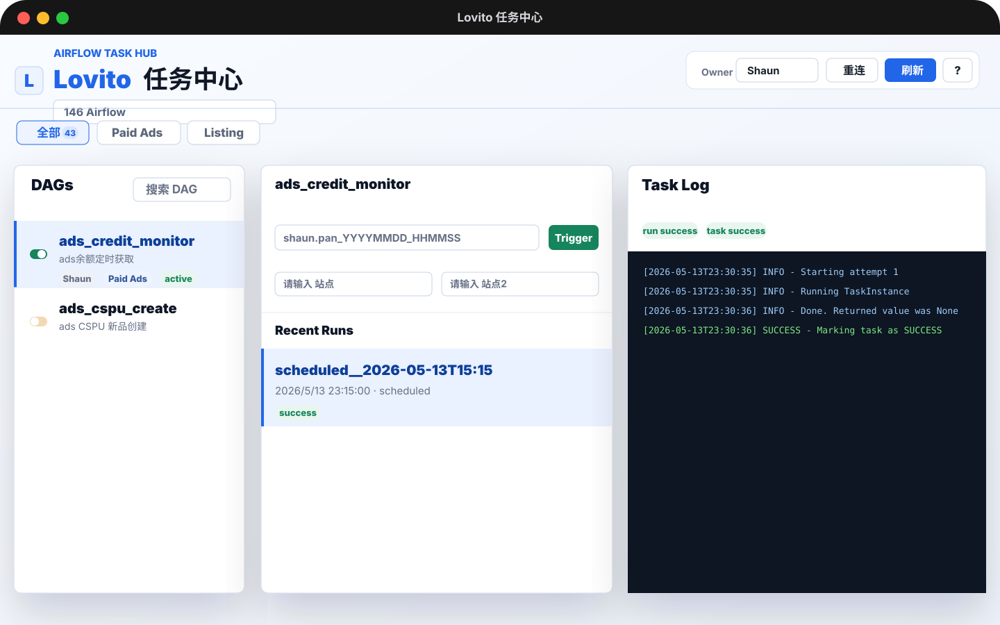

DAG Library
在左侧完成 DAG 筛选、检索与状态控制。
顶部分类基于 DAG tag 生成，支持 Paid Ads、Listing、买手和其他分类。DAG 左侧开关延续 Airflow 的操作习惯，仅授权系统用户可执行暂停与启用操作。
Overview
Lovito 任务中心聚焦 owner 为 Shaun 的 DAG 操作，集中呈现任务状态、运行参数、日志信息以及必要的手动控制能力。

DAG Library
顶部分类基于 DAG tag 生成，支持 Paid Ads、Listing、买手和其他分类。DAG 左侧开关延续 Airflow 的操作习惯，仅授权系统用户可执行暂停与启用操作。
Trigger
配置了 dag run conf fields 的 DAG 会展示专属输入框；未配置字段映射的 DAG 无需填写参数，保留默认 {} 即可触发。run id 留空时，系统会自动使用当前用户名与时间生成。
Runs & Logs
选择 recent run 后自动加载对应 task tries，并在右侧展示任务日志。日志支持横向滚动与按等级着色，run conf 可点击放大并复制完整 JSON。
Guide
服务下拉用于切换 Airflow 地址；Owner 用于控制 DAG 过滤范围；重连会重新登录；刷新会同步 DAG 与远端配置。
分类按钮基于 tag 生成，搜索框支持按名称与描述检索。左侧开关用于启用或暂停 DAG。
专属参数框会自动拼接 conf；未配置参数框的 DAG 无需填写。每个 DAG 同时 running / queued 超过 3 个时，将弹窗提示并阻止触发。
点击 run 可切换任务上下文，点击 conf 摘要可放大查看并复制完整 JSON。
用于查看同一个 task 的多次尝试记录，适合排查重试过程与失败后的恢复情况。
支持跟随当前 task、自动滚动、手动刷新、终止 task，以及清空当前日志窗口。
Continuity
任务运行在 Airflow 服务器上，不依赖客户端持续运行。重新打开程序时，将恢复至上次查看的 DAG、run、task 与日志位置，便于继续追踪运行结果。
Download